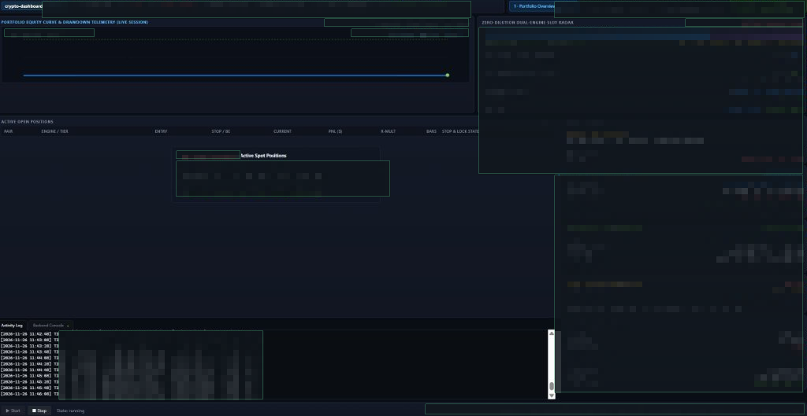

← 回個人作品
加密貨幣 24/7 全自動量化交易與高併發監控引擎
以 Go (Golang) 與 Wails v2 打造的單一執行檔自動化交易與原生桌面監控系統，核心解決 7×24 小時不間斷維運、高併發即時串流資料一致性，以及外部 API 限流與異常斷線的自動容錯恢復。系統結合 Binance WebSocket 本地端零權重行情快取（sync.RWMutex）、Apache Parquet 欄式歷史資料層與多層次帳戶風控狀態機，在全天候高波動市場中實現無人值守穩定執行。
Go (Golang)
Wails v2
Binance WebSocket
sync.RWMutex Cache
Apache Parquet
24/7 Fault-Tolerant FSM
Goroutines & Singleflight
~75%
Parquet 欄式儲存節省磁碟空間
~8×
多幣種歷史特徵讀取加速
< 50 MB
Go 核心守護進程常駐記憶體
零限流封鎖
零 API 權重快取與斷線自癒
1. 高併發串流快取、欄式儲存與 24/7 高可用性
- 零 API 權重消耗的併發記憶體行情快取 導入 Binance WebSocket（miniTicker）串流並以 sync.RWMutex 與 Stale-TTL 建構執行緒安全的記憶體內行情快取，實現零 API 權重消耗的併發讀取，從架構層面規避高頻 REST 輪詢觸發的限流與 IP 封鎖；斷線時另以 Singleflight 請求合併與冷卻限流保護備援 API 配額。
- Apache Parquet 欄式歷史資料層與常駐資源控制 透過 Apache Parquet 依年份分區儲存多時框 OHLCV 與已下架幣種資料，相較原始 JSON 格式節省約 75% 磁碟空間，多幣種特徵讀取速度提升約 8 倍；守護進程支援 7×24 小時連續運行，Go 核心記憶體常駐控制在 50 MB 內且零 API 限流封鎖。
- 單一執行檔容錯狀態機與 Wails v2 原生監控介面 以 Go 與 Wails v2 編譯為無外部環境依賴的原生單一執行檔，內建 Watchdog 心跳監控、含隨機抖動的指數退避自動重連（Exponential Backoff）、原子化本地狀態持久化與 JSONL 結構化稽核日誌，並透過桌面儀表板即時呈現在線連線與風險遙測。
2. 無偏誤因果撮合與加密市場摩擦建模
- 因果逐根 K 線撮合（先出場後進場） 強制執行嚴格因果時序（Causal Alignment）：自動截斷尚未收盤的日 K 防止未來函數洩漏，並在每根 K 線固定依「先停損／減碼出場、後評估進場訊號」順序撮合，確保離線驗證與實盤行為完全一致。
- 納入已下架幣種排除倖存者偏誤 完整保留歷史下架與歸零代幣之點對點動態流動性排名，涵蓋波動度收斂（VCP）與異常成交量突破（Episodic Pivots）多體制漏斗，徹底排除僅回測現行存活主流幣所產生的倖存者偏差灌水。
- 永續合約資金費率（Funding Rate）與極端滑價建模 在離線回測引擎完整納入加密市場獨有損耗，涵蓋掛單／吃單手續費（Maker/Taker）、歷史每 8 小時永續合約資金費率結算，以及針對流動性真空插針（Flash-Wick）對硬停損施加的極端滑價懲罰，並透過跨牛熊 Walk-Forward 樣本外推進檢驗穩定性。
3. 加密市場專屬風控與安全保護機制
- 動態單一幣種集中度上限（Concentration Cap） 針對加密貨幣無漲跌幅限制與高相關性風險，在引擎底層實作附帶遲滯緩衝（Hysteresis）之動態集中度削峰上限，並結合交易所即時 MinNotional 過濾檢查，自動抑制單一膨脹部位佔比同時避免反覆碎單送出。
- 波動度自適應倉位與雙重帳戶熔斷（MaxDD & Monthly CB） 依據 ATR 與近期波動幅度動態計算標準化單位風險倉位，並在外層掛載最高權益回撤硬上限（MaxDD）與月度動態熔斷機制（Monthly CB），於市場失序時自動縮手防禦。
- 交易所端硬性停損與緊急全平倉（KILL_FLATTEN） 於成交後配置交易所層級條件停損防護，賣出前自動校正基礎幣種手續費與精度捨去規則；當觸發極端風險閘門時，透過獨立 KILL_FLATTEN 狀態機執行緊急防禦清倉與安全狀態封鎖。
系統架構（離線驗證與實盤執行分離）
點擊下方任一架構模組卡片，即可展開查看該模組的工程職責、內部機制與上下游資料介面（支援鍵盤 ← / → 切換）。
OFFLINE RESEARCH & VALIDATION
離線無偏誤驗證泳道
與實盤執行路徑完全隔離
⇣ 僅單向輸出經驗證之凍結結構參數（離線回測與實盤執行完全隔離）
LIVE 24/7 EXECUTION & RISK
7×24 實盤高可用執行泳道
Go 單一執行檔 · 常駐 < 50 MB · 零限流封鎖
↳ 通過總體與因果門控之候選訊號送入風控與執行狀態機
04 / 08
IN
OUT
Wails v2 原生桌面監控介面（實機脫敏畫面）
點擊下方任一畫面可放大檢視；為保護策略 Alpha，畫面中的帳戶餘額、幣種代號與具體風控參數均已脫敏遮蔽。
